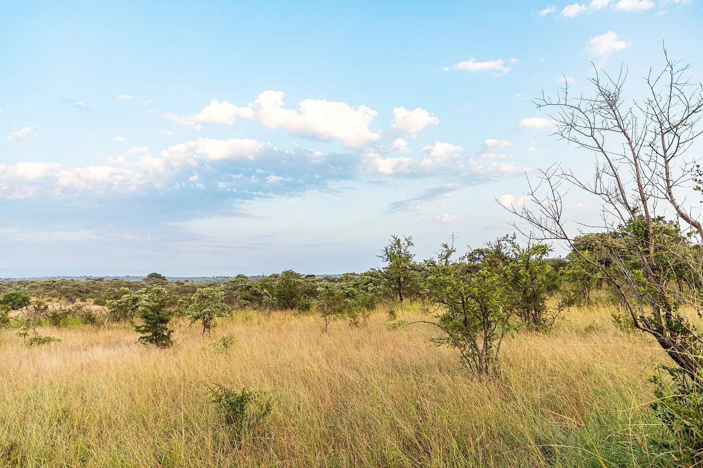
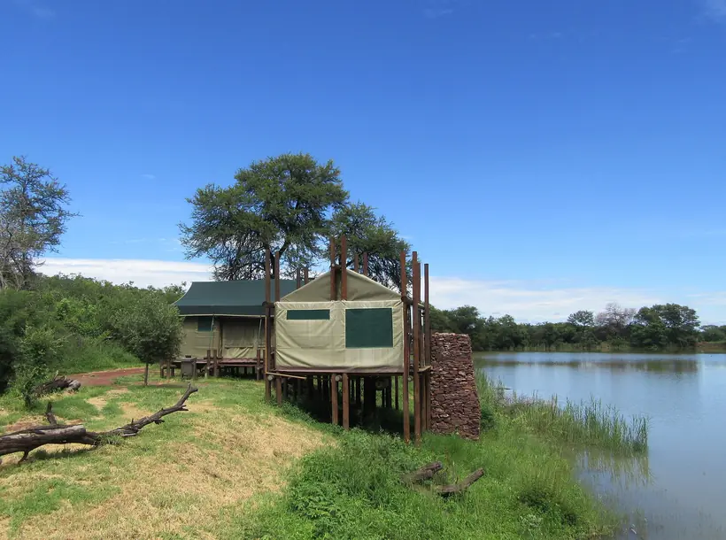

Afrique du Sud — Le Cap, vignobles & Kruger
Le Cap & le Kruger
Deux Afrique du Sud en un voyage : la ville-monde du Cap, enserrée entre la montagne de la Table et deux océans, puis le Kruger et ses réserves privées où les Big Five se laissent approcher à quelques mètres. Quatre jours de villes, de vignes et de falaises maritimes, six jours de safari dans l'un des meilleurs territoires à léopard du continent. Le tout relié par un vol intérieur court, sans transferts épuisants.
Le circuit en bref
Durée
12 jours / 11 nuits
Confort
Confort premium — Boutique-hotels & lodges de safari de charme
Tarif
5 490 € à partir de, par personne
Groupe
4 à 10 voyageurs
Meilleure période
Avr, Mai, Juin, Sep, Oct
Prochains départs
18 avril 2026 · 9 mai 2026 · 27 juin 2026 · 10 octobre 2026

Ce que vous allez vivre
- Montagne de la Table en téléphérique, Bo-Kaap colorée et quartier de Sea Point au coucher du soleil
- Cape de Bonne-Espérance et colonie de pingouins du Cap de Boulders Beach
- Journée dans les vignobles de Stellenbosch et Franschhoek, nuit dans un domaine viticole
- Quatre safaris dans le Kruger et les réserves privées voisines, rangers anglophones et accompagnateur francophone
- Route panoramique du Blyde River Canyon, l'un des plus grands canyons verdoyants du monde
- Dîner de fin de safari dans un boma, sous les braises du feu de camp
Le fil du voyage
- J1Arrivée au Cap
- J3Cape Point & Boulders Beach
- J5Vol vers le Kruger
- J7Journée entière dans le Kruger
- J9Blyde River Canyon
- J11Johannesburg — Soweto & mémoire
Jour par jour
L'itinéraire en détail
Un rythme pensé pour la lumière du matin et du soir — les heures où la savane s'anime.
-
Arrivée au Cap
Accueil à l'aéroport du Cap et transfert vers un boutique-hôtel de la rue Kloof, au pied de la montagne de la Table. Après-midi de décompression sur la promenade de Sea Point, entre joggeurs, marchands de glace et océan Atlantique. Dîner dans un restaurant du quartier de Green Point, première rencontre avec votre accompagnateur pour caler la semaine.
Kloof Street Boutique Hotel (boutique-hôtel, Le Cap) Dîner -
La montagne de la Table & la ville
Montée en téléphérique rotatif au sommet de la montagne de la Table, panorama à 360 degrés sur la ville, le stade et les deux océans quand les nuages acceptent de se retirer. Descente pour un déjeuner dans le quartier coloré de Bo-Kaap, suivi d'une visite guidée du musée du District Six, mémoire de l'apartheid. Fin d'après-midi libre sur le marché de Greenmarket Square, dîner libre au choix du quartier.
Kloof Street Boutique Hotel (boutique-hôtel, Le Cap) Petit-déjeuner -
Cape Point & Boulders Beach
Route vers la péninsule du Cap par les villages de pêcheurs de Hout Bay et Chapman's Peak, route corniche spectaculaire taillée dans la falaise. Visite du Cape de Bonne-Espérance et du phare du Cape Point, où les courants de l'Atlantique et de l'Indien se rejoignent dans l'écume. Après-midi à Boulders Beach, au milieu de la colonie de pingouins du Cap qui nichent entre les rochers granitiques, retour par Simon's Town.
Kloof Street Boutique Hotel (boutique-hôtel, Le Cap) Petit-déjeuner -
Vignobles de Stellenbosch & Franschhoek
Route vers les terres viticoles, à une heure du Cap, entre rangées de vignes et montagnes de granit. Visite de deux domaines de Stellenbosch, dégustation commentée de chenin et de pinotage, déjeuner sous les chênes d'une ferme viticole. Après-midi à Franschhoek, vallon fondé par les huguenots français, installation pour la nuit dans un domaine viticole transformé en maison d'hôtes. Dîner gastronomique au domaine.
Franschhoek Vineyard House (maison d'hôtes de domaine viticole, Franschhoek) Petit-déjeuner -
Vol vers le Kruger
Vol matinal du Cap vers Johannesburg puis correspondance vers Hoedspruit, à la porte du Kruger. Accueil à l'aérodrome et transfert vers une réserve privée de charme jouxtant le parc national, déjeuner servi sur la terrasse face à la savane. Premier game drive en 4x4 ouvert en fin d'après-midi, à la poursuite des premiers éléphants et girafes, dîner au boma autour du feu.
Phabeni River Lodge (lodge de safari de charme, réserve privée du Kruger) Pension complète -
Safari — la traque des léopards
Départ au lever du jour avec un ranger et un pisteur shangaan, à l'affût des léopards pour lesquels la réserve est réputée : la densité y est l'une des plus élevées d'Afrique australe. Petit-déjeuner servi en brousse au bord d'une rivière, retour au lodge pour la sieste aux heures chaudes. Deuxième sortie en fin d'après-midi, lions et hyènes s'activent quand la lumière baisse.
Phabeni River Lodge (lodge de safari de charme, réserve privée du Kruger) Pension complète -
Journée entière dans le Kruger
Entrée dans le parc national du Kruger pour une journée entière de game drive le long des rivières Sabie et N'waswitshaka : buffles en grand nombre, rhinocéros blancs, hippopotames et plus de cinq cents espèces d'oiseaux. Déjeuner dans un camp du parc, la terrasse surplombant la rivière. Retour lent vers la réserve en fin de journée, en suivant les indications radio qui circulent entre rangers sur les lions.
Phabeni River Lodge (lodge de safari de charme, réserve privée du Kruger) Pension complète -
Dernier safari & sortie de nuit
Game drive matinal orienté rhinocéros et guépards, les espèces manquantes de la liste de chacun. Après-midi libre au lodge : piscine, bibliothèque naturaliste ou massage sur la terrasse. En soirée, sortie de nuit encadrée : les projecteurs révèlent les chasseurs nocturnes, genettes, civettes, bushbabys et parfois un léopard en pleine traque. Dîner de fin de safari servi dans le boma, autour des braises.
Phabeni River Lodge (lodge de safari de charme, réserve privée du Kruger) Pension complète -
Blyde River Canyon
Route panoramique vers l'ouest à travers les monts Drakensberg : Trois Rondavels, belvédères de God's Window et Bourke's Luck Potholes, marmites de granit sculptées par la rivière. Déjeuner au bord du canyon, l'un des plus grands canyons verdoyants du monde. Installation dans un lodge perché sur l'escarpement, coucher de soleil sur les gorges.
Blyde Escarpment Lodge (lodge de charme, Blyde River Canyon) Pension complète -
Vol vers Johannesburg
Matinée tranquille au lodge, ou courte randonnée sur les crêtes de l'escarpement pour ceux qui veulent une dernière vue du canyon. Transfert vers l'aérodrome de Hoedspruit et vol de l'après-midi vers Johannesburg, à travers le Highveld doré. Installation dans un hôtel proche du quartier de Rosebank, dîner libre dans le quartier.
Rosebank Urban Hotel (hôtel contemporain, Johannesburg) Petit-déjeuner -
Johannesburg — Soweto & mémoire
Visite guidée de Soweto au matin : la maison de Mandela, la rue Vilakazi, le mémorial Hector Pieterson, lieu de mémoire de 1976. Déjeuner dans un restaurant du township, puis visite du musée de l'Apartheid, parcours chronologique bouleversant. Fin d'après-midi libre au marché d'artisanat de Rosebank, dîner d'adieu où votre accompagnateur retrace le voyage.
Rosebank Urban Hotel (hôtel contemporain, Johannesburg) Déjeuner & dîner -
Départ
Matinée libre à Johannesburg selon l'horaire du vol, dernier café au jardin de l'hôtel. Transfert vers l'aéroport international O. R. Tambo et assistance à l'enregistrement.
— Petit-déjeuner
Galerie
En images, sans retouche



Ce qui est inclus
Inclus dans le tarif
- Vol intérieur Le Cap – Johannesburg – Hoedspruit aller-retour
- Pension selon programme (pension complète en safari, petit-déjeuner en ville)
- Accompagnateur francophone au Cap et à Johannesburg, rangers anglophones au Kruger avec interprétation en français
- Deux safaris par jour en 4x4 ouvert dans la réserve privée et une sortie de nuit
- Journée entière de game drive dans le parc national du Kruger
- Droits d'entrée (montagne de la Table, Cape Point, Boulders, Kruger, musée de l'Apartheid)
- Dégustations dans deux domaines viticoles de Stellenbosch
Non inclus
- Vols internationaux aller-retour
- Visa d'entrée en Afrique du Sud selon votre nationalité
- Assurance voyage et assistance rapatriement
- Pourboires pour les rangers, pisteurs et personnel des lodges
- Activités optionnelles : survol en hélicoptère de la montagne de la Table, massage, dégustations supplémentaires
- Repas libres mentionnés au programme et dépenses personnelles
Départs 2026
18 avril 20269 mai 202627 juin 202610 octobre 2026 — autres dates possibles en privé : demandez un départ sur mesure.
Dans la même région
Continuez l'exploration
Afrique du Sud — Le Cap, Hermanus, Tsitsikamma & Addo
Route des Jardins & Baleines
De juin à novembre, les baleines franches du Sud remontent la côte pour mettre bas dans les eaux tempérées de Walker Bay, et la ro…

Horizons Sauvages
Ce circuit, votre version
Allongez une étape, changez un camp, ajoutez une extension balnéaire : tout se discute.